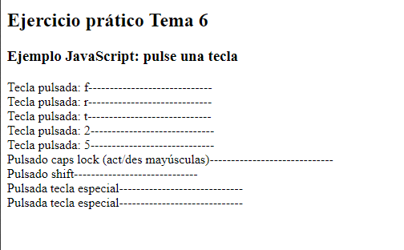

Enunciado
A continuación, deberá crear una página web que muestre por pantalla la tecla del teclado que ha pulsado, es decir, si pulsa la tecla a, nos mostrará un mensaje diciendo que ha pulsado la tecla a. Se tiene que poder pulsar todas las teclas, es decir, letras, números y teclas especiales.
El programa deberá funcionar como se muestra en la siguiente imagen:
Actividad asociada al CE1.1, CE2.4 y CE3.2
CE1.1 Describir las estructuras secuencial, condicional y de iteración que se utilizan para agrupar y organizar las acciones de un programa.
CE2.4 Describir los eventos que proporciona el lenguaje de guion: de ratón, de teclado, de enfoque, de formulario y de carga, entre otros, para interactuar con el usuario y relacionarlos con los objetos del lenguaje.
CE3.2 Identificar los objetos, sus propiedades y sus métodos y su funcionalidad dentro del script ya desarrollado con el fin de ajustarlos a la página donde se va a integrar.
Solución
Ejercicio práctico Tema 6
Ejemplo JavaScript: pulse una tecla.
Actividad asociada al CE1.1
- Estructura secuencial: La estructura secuencial es la forma más básica de organizar las acciones en un programa. Las instrucciones se ejecutan en orden secuencial, una tras otra, sin ninguna condición o repetición. Cada acción se completa antes de pasar a la siguiente. Es similar a seguir una lista de tareas en la que se realiza cada tarea en secuencia.
- Estructura condicional:
La estructura condicional permite que el programa tome decisiones basadas en condiciones específicas. Se utiliza para ejecutar un bloque de código si se cumple una condición determinada. Las estructuras condicionales más comunes son:
- If (si): Permite ejecutar un bloque de código si se cumple una condición dada. Si la condición es verdadera, se ejecuta el bloque de código asociado. Si la condición es falsa, se omite el bloque de código o se ejecuta otro bloque asociado a un "else" (si no).
- Switch (selección): Permite seleccionar un caso específico a ejecutar de acuerdo con el valor de una variable o expresión. Se comparan diferentes casos y se ejecuta el bloque de código correspondiente al caso que coincide.
- Estructura de iteración:
La estructura de iteración o bucle permite repetir un bloque de código varias veces mientras se cumpla una condición. Las estructuras de iteración más comunes son:
- For (para): Se utiliza cuando se conoce la cantidad exacta de repeticiones necesarias. Se especifica una variable de control, una condición de salida y una operación de actualización. El bloque de código se ejecuta mientras la condición de salida se cumpla.
- While (mientras): Se utiliza cuando no se conoce la cantidad exacta de repeticiones necesarias. El bloque de código se ejecuta siempre que se cumpla una condición dada. La condición se verifica antes de cada iteración.
- Do-While (hacer-mientras): Similar al bucle "while", pero la condición se verifica después de ejecutar el bloque de código al menos una vez. Esto garantiza que el bloque de código se ejecute al menos una vez, independientemente de si la condición es verdadera o falsa.
Estas estructuras son fundamentales para organizar el flujo de ejecución de un programa, tomar decisiones y repetir acciones según sea necesario.
Actividad asociada al CE2.4
JavaScript proporciona una serie de eventos que permiten la interacción con el usuario. Algunos eventos comunes incluyen:- Eventos de ratón: Permiten detectar acciones realizadas con el ratón, como hacer clic en un elemento, mover el cursor, arrastrar y soltar, entrar o salir de un elemento, entre otros. Ejemplos de eventos de ratón son "click", "mouseover", "mouseout" y "dragstart".
- Eventos de teclado: Permiten detectar acciones realizadas con el teclado, como pulsar una tecla, soltar una tecla o mantener presionada una tecla. Ejemplos de eventos de teclado son "keydown", "keyup" y "keypress".
- Eventos de enfoque: Permiten detectar cambios en el foco de los elementos. Por ejemplo, cuando un campo de entrada obtiene o pierde el foco. Ejemplos de eventos de enfoque son "focus" y "blur".
- Eventos de formulario: Permiten detectar acciones relacionadas con el envío y validación de formularios, como enviar un formulario, resetear un formulario o cambiar el valor de un campo de entrada. Ejemplos de eventos de formulario son "submit", "reset" y "change".
- Evento de carga: Se dispara cuando se completa la carga de un documento o recurso web. Es útil para realizar acciones después de que se haya cargado completamente una página web. El evento de carga se llama "load".
Estos son solo algunos ejemplos de eventos proporcionados por el lenguaje de guion. Cada evento se puede asociar a un objeto o elemento HTML específico y se puede utilizar para ejecutar código o desencadenar funciones en respuesta a la interacción del usuario.
Actividad asociada al CE3.2
Para ajustar objetos, propiedades y métodos en un script existente, debes examinar el código y comprender su funcionalidad. Algunos pasos a seguir son:
- Identificar los objetos: Busca en el código los nombres de variables o elementos que representen objetos. Los objetos pueden ser objetos del DOM (Document Object Model) que representan elementos HTML, objetos personalizados definidos en el script, o incluso objetos proporcionados por bibliotecas externas.
- Identificar las propiedades: Una vez que hayas identificado los objetos, busca las propiedades que se utilizan con esos objetos. Las propiedades son valores asociados a un objeto que describen características o estados del objeto. Pueden ser propiedades predefinidas del objeto o propiedades personalizadas definidas en el script.
- Identificar los métodos: Los métodos son funciones asociadas a un objeto que pueden realizar acciones o realizar operaciones en ese objeto. Busca los nombres de funciones o métodos que se utilizan con los objetos identificados. Estos métodos pueden ser métodos predefinidos del objeto o métodos personalizados definidos en el script.
Una vez que hayas identificado los objetos, propiedades y métodos en el script existente, podrás ajustarlos según tus necesidades y la página web donde se va a integrar el script. Puedes modificar los valores de las propiedades, llamar a los métodos en los momentos adecuados y utilizar los objetos de manera apropiada para lograr la funcionalidad deseada.